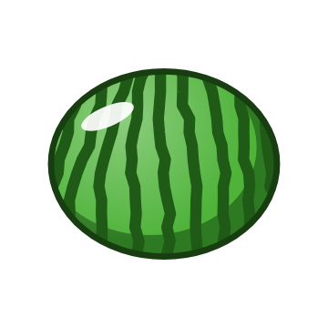
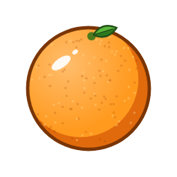
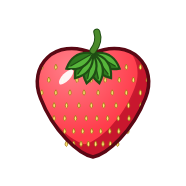
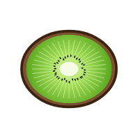

Instalar Corte Frutal 1.0.0— ☐ ✕




Corte Frutal
Hoy: sin instalador
Se copia la carpeta juego-frutas y se da doble clic en iniciar.bat. La primera vez sale esta ventana negra, descarga ~390 MB de internet y necesita Python 3.12 ya instalado:
Instalando lo necesario por primera vez, espera... Collecting mediapipe Downloading mediapipe-0.10.x-cp312-win_amd64.whl (50 MB) Collecting opencv-python ... Collecting pygame ...
No hay acceso directo en el escritorio ni en Inicio, ni forma de desinstalar. El récord se guarda dentro de la carpeta del juego.